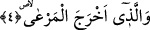

balığı yemekle meşgulken bu kez dalgıç kuşu karganın üzerine çullanarak onu ayağından
kaptığı gibi suya sürükledi ve suyun içine daldı. Sonra da karga boğulup ölünceye kadar
suyun altında kaldı. Ardından kendisi sudan çıktı.
Bir hadisi şerifte konumuzla ilgili olarak şöyle bir olay anlatılır: “Süte su
karıştırmayın çünkü sizden önceki ümmetlerden birisinde bir adam yaşardı. Bu kimse
içine su katılmış süt satardı. Bir gün bir maymun satın aldı ve deniz yolculuğuna
çıktı. Yolculuk esnasında deniz dalgalanmaya başlayınca Allah maymuna bir ilhamda
bulundu ve maymun sâhibinin para kesesini kaptığı gibi geminin direğinin en yüksek
tepesine çıktı. Sonra para kesesini açarak sâhibinin gözü önünde bir dinarı denize,
bir dinarı gemiye atmaya başladı. Böylece kese içindeki parayı yarıyarıya bölmüş
oldu. Maymunun bu hareketiyle sudan gelen para suya ticaret yoluyla gelen helal
para sâhibine dönmüş oldu.” [76]
Yaratıkların tuhaf ve enteresan hallerinden birisi de şudur; Adamın biri Isfahanlı bir
şahsı katleder ve onu bir kuyuya atıp üzerini toprakla örter. Maktulün bir köpeği vardır.
Hayvan sâhibine yapılan bu muameleyi görür ve hergün kuyunun başına gelerek cesedin
üzerine örtünmüş olan toprağı eşelemeye başlar. Ayrıca katili görünce ona havlar. Bu
hareket böylece tekerrür edip durunca olayı görenler köpeğin eşelediği yeri kazarlar ve
maktulü bulurlar. Sonra adamı yakalayıp ifâdesini alırlar. Katil suçunu itiraf edince
kısas yoluyla katledilir.
Enteresan durumlardan birisi de hurma ağacıdır. Hurma ağacı aşık olur. Erkek hurma
ağacı, dişi hurma ağacı üzerine meyledip onu kucaklamak ister ve dişi hurma ağacı bu
olaydan dolayı zayıflayıp, sararıp, solar. Çaresi ise; aşık olan bu iki ağacı birbirine bir
iple bağlamak veya üzerine karşı ağaçtan bir yaprak asmak ya da bir çiçek bırakmaktır.
Buraya kadar anlattığımız enteresan olayların benzeri o kadar çoktur ki bunlar
anlatmakla ve yazmakla bitirilemez.
4. (Topraktan) yeşil otu çıkarmıştır.
Allah mükemmel kudreti ile hayvanların beslendikleri yeşil, sarı, kırmızı ve beyaz
renkte çeşit çeşit otu yerden bitirmiştir.
İbn Abbas (r.a.) şöyle diyor: Okuduğumuz âyette yer alan; “el-mer’a” yeşil ot
anlamınadır. es-Sıhah’ta ifâde edildiğine göre “er-rı’y” ot demektir. “er-ra’y” ise fiilin
masdarıdır. “el-mer’a” kelimesi ise ot anlamına gelir. Ayrıca masdar anlamı da ifâde
eder.